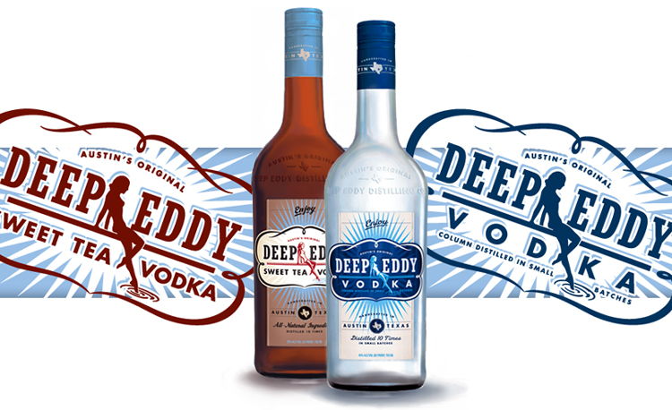
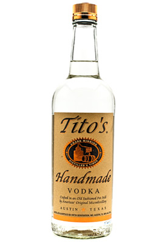
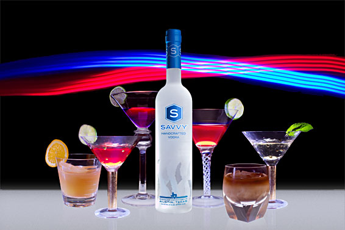
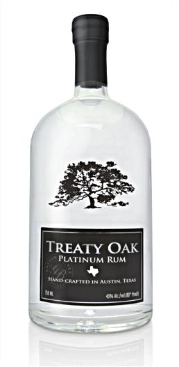
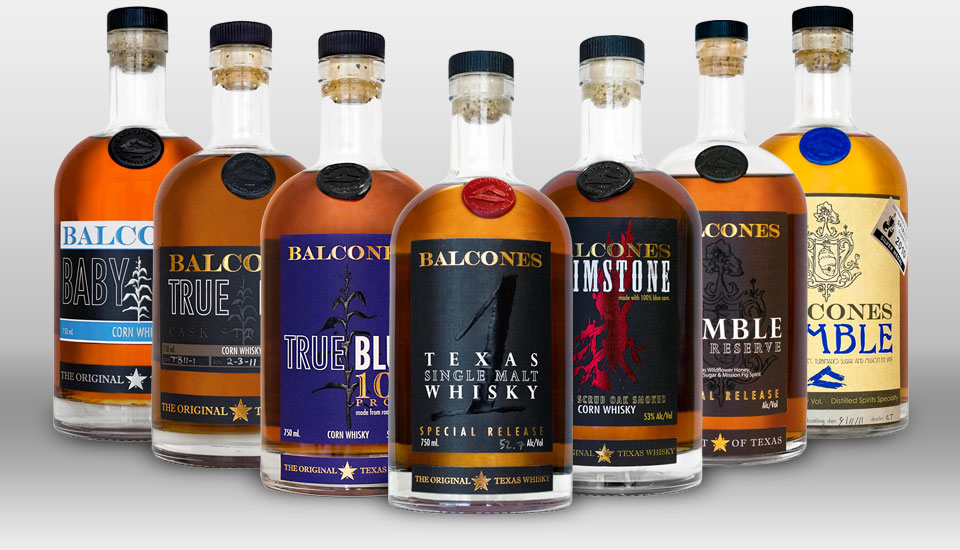
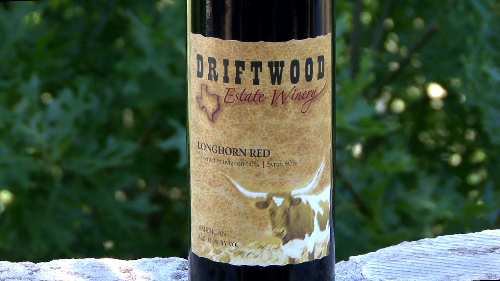
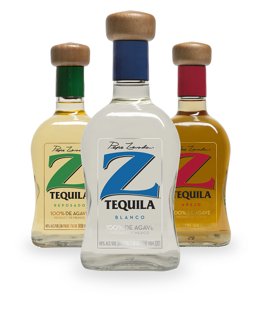
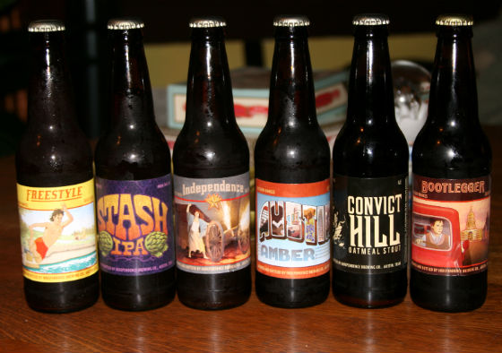
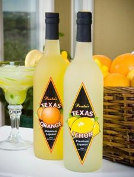

Vodka
Even though vodka was invented in Europe, Texas has embraced and enhanced this classic spirit.
- 
- 
- 
Austin, Texas is a utopia in a great state not only for its festivals but also for its eclectic and entrepreneurial culture. Though the city is known mostly for its music scene, creativity from Austin comes in many forms. Drink in Austin is your guide to Austin’s entrepreneurial spirits. Did you like that pun? From microbrewery to state of the art distillery, we’ll take you on a tour through tradition and innovation as we explore the wonderful world of Austin’s drink menu.
Even though vodka was invented in Europe, Texas has embraced and enhanced this classic spirit.
Yo ho ho! Pirates love rum but not as much as Texans. If Black Beard would have had a chance to taste the rum that Austin has to offer, he might have considered a career change.
What's a drink selection without whiskey? Not much of a selection at all. Of course, Austin has put its own stamp on this staple.
Does Austin do wine? Well, with the Univeristy of Texas being the largest university campus in the country, it's obvious that Austin has plenty of class (rimshot). As corny as that joke was, it turns out that The Univeristy of Texas System is the largest wine producer in the state. They're not the only source of wine in the area, though.
All tequila is made in Mexico but it's not all bottled there. Austin offers some award-winning varieties that put the "art" in Mexican Martini.
Beer. What else needs to be said?
Texans are traditionally considered to be a bit rough around the edges. That doesn't mean we can't enjoy the softer side of spirits.
